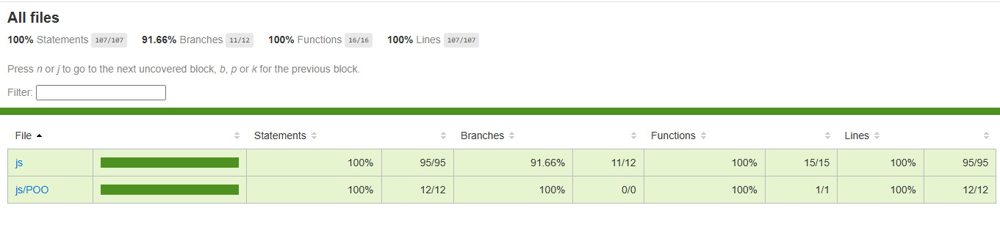

Testing en el Desarrollo de Software
¿Por qué hacer pruebas?
- Verificación y Calidad: Las pruebas aseguran que cada parte del código
funcione según lo esperado, previniendo errores y regresiones.
- Documentación Viva: Los tests actúan como una forma de documentación que
describe el comportamiento esperado de las funciones, facilitando la comprensión del código
a nuevos desarrolladores.
- Facilita el Refactoring: Con una suite de tests robusta, se pueden hacer
cambios y mejoras en el código con la confianza de que cualquier error será detectado
rápidamente.
- Integración en CI/CD: Las pruebas automatizadas se integran en pipelines de
integración continua, permitiendo feedback inmediato y manteniendo la estabilidad del
software en cada ciclo de desarrollo o sprint.
Tipos de Pruebas y su Categorización
1. Pruebas Unitarias
Las pruebas unitarias verifican el comportamiento de la unidad más pequeña del código
(funciones, métodos o clases). Son rápidas de ejecutar y se enfocan en un alcance muy
específico. Se emplean mocks, stubs y spies para aislar el componente bajo prueba. Se recomienda
probar funciones que contengan lógica de negocio, interacciones con el DOM o cálculos complejos.
2. Pruebas de Integración
Estas pruebas evalúan la interacción entre múltiples componentes o módulos, asegurando que se
integren correctamente. Se utilizan escenarios reales o simulados para comprobar la comunicación
entre distintas partes del sistema.
3. Pruebas End-to-End (E2E) y de Sistema
Simulan el comportamiento del usuario y validan el sistema completo, desde la interfaz hasta la
base de datos. Aunque son más lentas y complejas, son fundamentales para la validación final del
producto. En entornos de producción se recomienda investigar frameworks como Cypress, Selenium,
Protractor o TestCafe.
Estrategias de Testing
En el desarrollo de software, las estrategias de testing son fundamentales para garantizar la
calidad, la funcionalidad y la estabilidad del código. A continuación, se describen las
principales estrategias:
-
TDD (Test Driven Development): (Desarrollo Guiado por Pruebas)
Se basa en escribir primero las pruebas antes del código. El flujo
típico de TDD sigue estos pasos:
- Escribir una prueba mínima que inicialmente falle (porque el código aún no existe).
- Escribir el código necesario para que la prueba pase.
- Refactorizar el código para hacerlo más eficiente o limpio, asegurándose de que las
pruebas sigan pasando.
Este enfoque asegura que el código esté respaldado por pruebas desde el principio,
facilitando la refactorización con confianza y reduciendo defectos en etapas
posteriores. TDD se centra en el cumplimiento de los requisitos funcionales de manera
estrictamente técnica.
-
BDD (Behavior Driven Development): (Desarrollo Guiado por
Comportamiento)
Se enfoca en el comportamiento esperado del sistema desde la
perspectiva del negocio o del usuario final. Se utilizan herramientas como Cucumber o
lenguaje semiestructurado (por ejemplo, Gherkin: Given, When, Then) para
describir escenarios claros y entendibles por todas las partes interesadas.
Ejemplo de un escenario en BDD:
Feature: Suma de números
Scenario: Sumar dos números
Given tengo los números 2 y 3
When los sumo
Then el resultado debería ser 5
BDD fomenta la colaboración entre desarrolladores, testers y stakeholders para
garantizar que el producto cumpla con los requerimientos esperados.
-
Automatización:
Consiste en implementar pruebas automatizadas que se ejecutan en cada
commit, integración o despliegue, comúnmente a través de pipelines de CI/CD (Integración
y Entrega Continua). Esto permite:
- Detectar errores rápidamente antes de que lleguen a producción.
- Reducir esfuerzos manuales y optimizar el tiempo.
- Mantener un sistema confiable y libre de regresiones.
Las pruebas automatizadas incluyen pruebas unitarias (con TDD), pruebas de integración y
pruebas E2E (End-to-End), cubriendo así todo el espectro funcional del sistema.
Cómo se complementan TDD, BDD y Automatización
El flujo ideal combina estas estrategias:
-
Inicio del ciclo: Se definen los requerimientos funcionales y no
funcionales, y se planea la arquitectura del sistema.
-
Escenarios en BDD: A partir de los requerimientos, se escriben escenarios
de comportamiento para detallar cómo debería funcionar el sistema desde el punto de vista
del usuario final.
-
Implementación con TDD: Para cada escenario, se escriben pruebas unitarias
específicas y luego el código que haga pasar esas pruebas. Este enfoque asegura que cada
unidad del sistema cumpla su propósito técnico.
-
Automatización: Las pruebas (unitarias, de integración, E2E) se integran en
pipelines automatizados, ejecutándose con cada cambio para garantizar estabilidad continua.
Combinando estas estrategias, se logra un desarrollo más colaborativo (BDD), técnicamente sólido
(TDD) y confiable (automatización), lo que facilita el mantenimiento, escalabilidad y calidad
del producto.
Integración en CI/CD y Metodologías Ágiles:
Continuous Integration and Continuous Delivery/Deployment (CI/CD) Significa Integración
Continua y Entrega/Implementación Continua. Estas prácticas buscan optimizar y acelerar el ciclo
de vida del desarrollo de software mediante la automatización de la integración, las pruebas y
la implementación de los cambios de código.
Integración Continua (CI)
La Integración Continua (CI): consiste en integrar de forma automática y
frecuente los cambios de
código de varios desarrolladores en un repositorio de código fuente compartido. Este proceso
implica herramientas automatizadas que compilan el código recién confirmado, ejecutan pruebas
unitarias y realizan revisiones de código. Los objetivos principales de la CI son identificar y
corregir errores rápidamente, facilitar la integración del código, mejorar la calidad del
software y reducir el tiempo necesario para lanzar nuevas funcionalidades.
Pipelines de CI: Herramientas como Jenkins, CircleCI, Travis CI, Bamboo o los propios pipelines
de GitLab/Azure DevOps ejecutan la suite de pruebas (unitarias, integración y en algunos casos
E2E) en cada commit o pull request.
Pruebas de Commit: Los tests de TDD/TDB se ejecutan en cada commit para detectar errores
tempranos y garantizar que las nuevas implementaciones no rompan la funcionalidad existente.
Entrega Continua (CD):
La Entrega Continua (CD): amplía la CI al automatizar el proceso de
lanzamiento, garantizando que los cambios en el código se prueben en un entorno similar al de
producción antes del despliegue. Esta práctica ayuda a evitar sorpresas de última hora y
garantiza que el código siempre esté listo para su implementación. La CD implica ejecutar
pruebas de integración y regresión en un entorno de pruebas, lo que hace que el proceso de
lanzamiento final sea más fluido y confiable.
Despliegue Continuo: (Automatiza el despliegue en producción tras pasar todas las pruebas). En
entornos de Staging y Producción, una vez que las pruebas en CI se aprueban, el código se
despliega en entornos de staging para validaciones más completas (incluyendo pruebas de
integración y E2E) y, finalmente, en producción.
¿Qué pruebas llegan a producción?
- Pruebas en el Pipeline: Generalmente, las pruebas unitarias, de integración y E2E se
ejecutan en los entornos de CI/CD y staging.
- Smoke Tests y Sanity Checks: En producción se pueden ejecutar pruebas de humo (smoke tests)
o chequeos de sanidad que validen rápidamente que la aplicación está operativa, pero las
pruebas completas se realizan antes del despliegue.
- Excepción: No se “despliegan” pruebas en producción, sino que se utilizan para validar que
el build es estable antes del despliegue. Con esto me refiero a que No se despliega
la suite completa de pruebas en producción.
Los tests se usan en las fases de desarrollo, integración y staging para garantizar la
estabilidad del build. En producción se pueden ejecutar pruebas de humo o sanity checks para
asegurarse de que el sistema está operativo, pero las pruebas detalladas (unitarias,
integración y E2E) se ejecutan en entornos controlados antes del despliegue.
Pruebas en el Proceso CI/CD: En entornos de desarrollo frontend con JavaScript
se utilizan herramientas como Jasmine, Mocha/Chai, Jest o QUnit para validar el comportamiento
de las funciones y la interacción del DOM (usando mocks, stubs y spies).Mientras que en el
Back-End, dependiendo del lenguaje, se pueden usar frameworks específicos (por ejemplo, JUnit
en Java o NUnit en .NET). El objetivo es validar que los diferentes módulos o componentes se
integren correctamente mediante herramientas como (Postman, Newman o frameworks de pruebas
integradas en el entorno de desarrollo).
Beneficios del Testing para Equipos y Proyectos
¡Recuerda porqué es importante que codifiques tus test: pruebas unitarias y en su momento
de integración y E2E!
- Documentación y Transferencia de Conocimiento: Los tests actúan como una
“documentación viva” que describe cómo se espera que funcione cada parte del código,
facilitando la incorporación de nuevos desarrolladores.
- Confianza en el Código: Contar con pruebas unitarias e integradas brinda
seguridad para realizar cambios y refactorizaciones sin temor a romper funcionalidades.
- Calidad Continua: La integración de tests en pipelines CI/CD garantiza una
calidad constante y la detección temprana de problemas, lo que se traduce en un software más
estable y confiable.
Pruebas unitarias en JavaScript
Nosotros abordaremos en detalle las pruebas unitarias que es lo correspondiente a nuestro tema
de estudio: “Fundamentos de Desarrollo Web”. Considero que para ser un desarrollador Web o
“front-end developer” es fundamental saber hacer pruebas unitarias de tu código de forma
competente y profesional, por lo que profundizaremos en las pruebas unitarias en JavaScript y tu
responsabilidad es aprender lo correspondiente al “Testing “ en el futuro de tu carrera
profesional.
Conceptos Básicos: Mocks, Stubs y Spies
Stubs: Son funciones o métodos que reemplazan una función o dependencia real
para devolver resultados fijos. Su principal objetivo es aislar la función en prueba,
controlando el comportamiento de sus dependencias. Así, se garantiza que, ante ciertos inputs,
la función retorne un valor fijo, facilitando la
validación del comportamiento, sin depender de la lógica real de la dependencia, sin la
complejidad completa de un mock.
Spies: Son envoltorios (wrappers) Su función principal es envolver ( "espiar")
o interceptar llamadas a funciones reales. Registran información (número de invocaciones,
argumentos, contexto, etc.) y, en algunos casos, también el resultado devuelto. sin modificar el
comportamiento original, lo que ayuda a verificar que la función se comporte como una función
pura en el sentido de que sus interacciones sean predecibles y observables. Por ejemplo, los
spies son útiles para verificar que se hayan llamado funciones específicas durante la ejecución
de una prueba.
Mocks: Un mock es un objeto que en muchos casos, combina las funcionalidades de
stubs y spies. Es decir, un mock no solo devuelve valores predefinidos (como un stub) sino que
también registra las interacciones (como un spy). Además, los mocks se configuran con
expectativas específicas: pueden validar que se hayan llamado con ciertos parámetros, que se
hayan producido las interacciones en un orden determinado o que se hayan lanzado errores
esperados en situaciones particulares. Si esas expectativas no se cumplen, la prueba falla.
Son objetos simulados que imitan el comportamiento de objetos reales. Además de definir
respuestas preestablecidas, registran cómo fueron llamados para luego verificar interacciones.
Suelen usarse para validar que una función haya llamado a otro componente de forma correcta.
¿Por qué y Cuándo Usar Mocks?
- Aislamiento de la Prueba: Permiten que la prueba se ejecute sin depender
del comportamiento de una dependencia externa.
- Verificación de Interacciones: Registran información sobre las llamadas
realizadas, facilitando la validación del flujo de interacción entre módulos.
- Control del Comportamiento: Permiten simular escenarios difíciles de
reproducir con la dependencia real, como errores de red.
- Documentación del Contrato: Actúan como una documentación viva que
especifica cómo se espera que interactúe un módulo con sus dependencias.
Ejemplos Prácticos
Analicemos primero un ejemplo con JavaScript puro (Vanilla JavaScript).
Ejemplo de Mocks con JavaScript
Podemos crear un mock manual para una función que, por ejemplo, envíe un mensaje. Imaginemos
que
tenemos un módulo que debe enviar un mensaje y queremos asegurarnos de que se llame
correctamente a la función de envío: enviarMensaje() se muestra
cómo simular la función y validar que se haya llamado con el mensaje esperado.
// Función real que usaríamos para enviar un mensaje
//(podría ser una llamada HTTP, etc.)
function enviarMensaje(mensaje) {
console.log("Mensaje enviado:", mensaje);
return true;
}
// Mock de enviarMensaje
function crearMockEnviarMensaje() {
const mock = function(mensaje) {
mock.llamadas.push(mensaje);
return true;
};
mock.llamadas = [];
mock.esperarLlamadaCon = function(esperado) {
if (!mock.llamadas.includes(esperado)) {
throw new Error(`Se esperaba que se llamara con: ${esperado}`);
}
};
return mock;
}
// Ejemplo de uso del mock
const mockEnviarMensaje = crearMockEnviarMensaje();
function procesarYEnviar(mensaje) {
// Lógica adicional puede ir aquí
return mockEnviarMensaje(mensaje);
}
procesarYEnviar("Hola mundo");
mockEnviarMensaje.esperarLlamadaCon("Hola mundo");
En este ejemplo se crea un mock para la función enviarMensaje que registra cada llamada en un
array (llamadas) y se añade un método esperarLlamadaCon para validar que la función haya
sido llamada con un argumento específico.
Guía para Instalar NVM y Node.js
Llegado este punto es necesario instalar Node.js para poder ejecutar las pruebas
correctamente.
Pero espera!, no instales Node todavía, te recomiendo hacerlo mediante Node Version Manager
(NVM)
Node.js es un entorno de ejecución para JavaScript que te permite ejecutar código JavaScript
fuera de un navegador, por ejemplo, en servidores. Está basado en el motor V8 de Chrome, lo
que
lo hace rápido y eficiente. Node.js es usado principalmente para desarrollar aplicaciones
backend, pero también puede servir para herramientas de desarrollo frontend.
npm es el gestor de paquetes (Node Package Manager) que viene incluido con Node.js. Es una
herramienta que facilita la instalación, gestión y uso de librerías y dependencias (módulos)
en
tus proyectos.
Con Node.js y npm puedes:
- Configurar herramientas de desarrollo como Webpack, Babel, Jest, Jasmine etc..
- Usar frameworks como Angular, React o Vue.
- Administrar dependencias de manera eficiente en proyectos grandes.
- Crear servidores backend.
Por ejemplo, si necesitas usar una librería externa como un marco de pruebas, un framework
web o
cualquier tipo de utilidad, puedes instalarlo desde npm en tu proyecto con unos pocos
comandos,
incluso puedes publicar tus módulos en el registro de npm.
¿Por qué NVM?
NVM (Node Version Manager) te permite instalar y cambiar fácilmente entre diferentes
versiones de
Node.js. Esto es útil para proyectos que requieren versiones específicas de Node.js.
NVM es esencial para trabajar con diferentes versiones de Node.js en un mismo sistema. Esto
evita
conflictos y facilita la gestión de proyectos con dependencias específicas.
La instalación varía ligeramente entre macOS/Linux y Windows:
Instalación de NVM en Windows
- Descarga el instalador de NVM para Windows desde el repositorio de GitHub: nvm-windows.
- Ejecuta el instalador y sigue las instrucciones.
- Abre una nueva terminal como Administrador y verifica la instalación ejecutando:
nvm --version
Instalación de NVM en macOS y Linux
- Abre tu terminal.
- Ejecuta el siguiente comando:
curl -o- https://raw.githubusercontent.com/nvm-sh/nvm/v0.39.1/install.sh | bash
- Cierra y vuelve a abrir tu terminal para que los cambios surtan efecto.
- Verifica la instalación ejecutando:
nvm --version
Instalación de Node.js con NVM
- Ejecuta el siguiente comando para instalar la versión LTS (Long Term Support) más
reciente
de Node.js:
nvm install --lts
- Ejecuta el siguiente comando para usar la versión LTS (Long Term Support) instalada
de Node.js:
nvm use xx.xx.x
- Verifica la instalación ejecutando:
node --version
npm --version
- Si no pudiste ejecutar npm --version. Ver la política actual de ejecución:
Get-ExecutionPolicy
Esto mostrará la política actual. Probablemente estará configurada en
Restricted.
- Cambiar la política de ejecución:
Para permitir la ejecución de scripts, usa este comando:
Set-ExecutionPolicy RemoteSigned
Esto permite ejecutar scripts locales sin firmar, pero requiere que los scripts
descargados de Internet estén firmados digitalmente.
- Confirmar el cambio:
Escribe Y (Yes) o S (Si) y presiona Enter cuando se te pida confirmación.
- Ejecuta nuevamente:
Get-ExecutionPolicy
Asegúrate de que ahora diga RemoteSigned.
- Probar nuevamente el comando npm:
npm --version
Ahora debería funcionar correctamente.
- Para ver la lista de versiones puedes utilizar
nvm list. Si
quieres utilizar una versión específica de Node.js, ejecuta:
nvm use [versión]
Instalación de frameworks de pruebas
Para instalar jest ejecuta el siguiente comando:
npm install --save-dev jest
para instalar Jasmine ejecuta:
npm install --save-dev jasmine
para instalar Mocha y Chai ejecuta:
npm install --save-dev mocha chai
para instalar QUnit ejecuta:
npm install --save-dev qunit
Entendiendo un poco package.json
Imagina que quieres tener Jest y Jasmine en el mismo proyecto. Tu package.json quedaría algo así:
{
"name": "fundametos-de-desarrollo-Web",
"version": "1.0.0",
"description": "Pruebas unitarias con Jest y Jasmine para ejemplos del proyecto",
"type": "module",
"scripts": {
"test:jasmine": "jasmine",
"test:jest": "jest",
"test": "npm run test:jasmine && npm run test:jest"
},
"devDependencies": {
"jest": "^29.7.0",
"babel-jest": "^29.7.0",
"@babel/core": "^7.21.0",
"@babel/preset-env": "^7.21.0"
}
}
Significado de package.json:
- name: Nombre del proyecto (fundametos-desarrollo-Web).
- version: Versión actual del proyecto (1.0.0).
- description: Breve descripción del proyecto.
- scripts:
test:jasmine: Ejecuta las pruebas de Jasmine.
test:jest: Ejecuta las pruebas de Jest.test: Ejecuta las pruebas de Jasmine y Jest en
secuencia.
- devDependencies: Dependencias necesarias para el desarrollo del
proyecto:
jasmine: Framework para pruebas unitarias.
jest: Otro framework para pruebas unitarias.
- type: Especifica que el proyecto utiliza módulos ES6.
Con esta configuración, puedes ejecutar:
npm run test:jasmine: Para ejecutar las pruebas únicamente
con Jasmine.npm run test:jest: Para ejecutar las pruebas únicamente con
Jest.npm run test: Para ejecutar todas las pruebas en conjunto.
Configuración de Jest con Babel
Para que Jest pueda interpretar y ejecutar código JavaScript moderno (como ES Modules con
import/export), es necesario configurarlo con Babel. Babel
transpila la
sintaxis moderna a una compatible con Node.js.
¿Por qué es necesario Babel?
- El entorno predeterminado de Node.js no soporta módulos ES6 de forma completa sin
configuración adicional.
- Jest, por defecto, utiliza CommonJS (
require/module.exports), lo cual causa
problemas al usar ES6 (import/export).
- Babel permite transpilar el código moderno para garantizar compatibilidad con Jest.
Pasos para configurar Jest con Babel
- Instala las dependencias necesarias:
npm install --save-dev jest babel-jest @babel/core @babel/preset-env
- Crea un archivo de configuración de Babel:
En la raíz del proyecto, crea un archivo llamado babel.config.json y agrega
lo siguiente:
{
"presets": ["@babel/preset-env"]
}
- Crea un archivo de configuración de Jest:
En la raíz del proyecto, crea un archivo llamado jest.config.js y agrega lo
siguiente:
export default {
transform: {
"^.+\\.js$": "babel-jest"
}
};
- Asegúrate de que
package.json esté configurado
correctamente:
Asegúrate de incluir "type": "module" si estás utilizando
módulos ES6:
{
"name": "fundametos-de-desarrollo-Web",
"version": "1.0.0",
"description": "Pruebas unitarias con Jest y Jasmine para ejemplos del proyecto",
"type": "module",
"scripts": {
"test:jasmine": "jasmine",
"test:jest": "jest",
"test": "npm run test:jasmine && npm run test:jest"
},
"devDependencies": {
"jest": "^29.7.0",
"babel-jest": "^29.7.0",
"@babel/core": "^7.21.0",
"@babel/preset-env": "^7.21.0"
}
}
- Ejecuta las pruebas:
Finalmente, puedes ejecutar tus pruebas con el siguiente comando:
npm run test
Configurar Jest con Babel es fundamental para trabajar con sintaxis moderna de JavaScript en
proyectos que utilicen ES Modules. La integración de Babel asegura que el código sea
compatible con Jest y que las pruebas se ejecuten sin problemas.
Estructura del Proyecto
├── tests/
│ ├── jasmine/
│ │ └── example.spec.js
│ ├── jest/
│ │ └── example.test.js
├── package.json
├── babel.config.json
├── jest.config.json
├── app.js
Descripción de la Estructura
- tests/jasmine/: Carpeta que contiene los archivos de pruebas
específicas para Jasmine. Por ejemplo,
example.spec.js.
- tests/jest/: Carpeta que contiene los archivos de pruebas específicas
para Jest. Por ejemplo,
example.test.js.
- package.json: Archivo de configuración del proyecto.
- app.js: Archivo principal del proyecto.
Pruebas unitarias: Ejemplo de configuración con Jest
En tu archivo package.json, agrega un script para ejecutar Jest:
"scripts": { "test": "jest" }
Ejecutar las pruebas
Ejecuta npm run test en la terminal para ejecutar las pruebas.
Jest
buscará archivos con el sufijo .test.js y ejecutará las
pruebas
definidas en ellos.
Conceptos clave de Jest
- describe: Agrupa pruebas relacionadas.
- it (o test): Define una prueba individual.
- expect: Crea una afirmación para verificar un valor.
- toBe: Verifica igualdad estricta.
- toEqual: Verifica igualdad profunda para objetos y arrays.
- beforeEach y afterEach: Ejecutan código antes y después de cada
prueba.
- beforeAll y afterAll: Ejecutan código antes y después de todas las
pruebas.
- Los spies, en Jest, se hace con métodos como jest.spyOn() o jest.fn().
Ejemplo con describe y toEqual
Imagina que tu código a evaluar es una suma:
export const sum = (x, y) => x + y;
Su prueba con jest podría quedar algo así:
// sum.test.js
import sum from './js/sum.js';
describe('sum function', () => {
it('adds two numbers', () => {
expect(sum(1, 2)).toBe(3);
});
it('handles negative numbers', () => {
expect(sum(-1, 5)).toBe(4);
});
it('handles objects', () => {
expect(sum({ a: 1 }, { b: 2 })).toEqual({ a: 1, b: 2 });
});
});
Podrías utilizar el archivo Funciones.js para hacer una prueba a
la función ejecutarFuncionComoParametro para hacer las pruebas
unitarias
necesarias. Ejecuta npm run test o npm run test:jest en
la terminal para ejecutar las pruebas con jest.
¿Qué hace la función?
-
La función
sum toma dos argumentos y devuelve
su suma.
- prueba con describe y toEqual:
describe agrupa las pruebas relacionadas con la
función
sum.it define casos de prueba individuales.toBe verifica la igualdad estricta para valores
primitivos.toEqual verifica la igualdad profunda para objetos.
Pruebas asíncronas con jest
Para probar código asíncrono, como promesas o callbacks, Jest proporciona varias
herramientas:
- async/await: La forma más moderna y legible de probar código
asíncrono.
- done: Una función de callback que indica que una prueba asíncrona
ha
finalizado.
- resolves y rejects: Afirmaciones para promesas.
Ejemplo con async/await sustituyendo done
Código a evaluar:
// fetchData.js
export async function fetchData(url) {
const response = await fetch(url);
return response.json();
}
Prueba en test/jest/fetchData.test.js
// fetchData.test.js
import fetchData from './js/fetchData';
test('fetches data from an API', async () => {
const data = await fetchData('https://jsonplaceholder.typicode.com/todos/1');
expect(data.userId).toBe(1);
expect(data.id).toBe(1);
});
Puedes crear el archivo fetchData.js y su respectiva prueba fetchData.test.js, con Ctrl + ñ
puedes abrir la terminal en VSCode ejecutarla con npm run test
o npm run test:jest.
¿Qué hace la función?
-
La función
fetchData realiza una petición HTTP a
una API y devuelve los datos en formato JSON.
- La prueba con async/await:
async/await simplifica la escritura de pruebas para
código asíncrono.- La prueba espera a que la petición a la API se complete y luego verifica los datos
recibidos.
expect(data.userId).toBe(1); evalua la prueba con la
expectativa de que el JSON convertido en objeto JavaScript contenga la propiedad
userId === 1 de forma estricta por lo que no convierte el texto en número- Me parece importante mencionar que done también es compatible con Jest en caso de
trabajar con callbacks.
- En pruebas con Jasmine o Jest, done se usa cuando trabajas con operaciones que
dependen del Event Loop pero no están basadas en promesas, como:
- Eventos del DOM.
- setTimeout o setInterval.
- Con done, puedes señalar manualmente cuándo debe concluir la prueba al llamar a
done() después de que la operación se complete, asegurándote de que el Event
Loop haya manejado todas las tareas relevantes.
Ejemplo de Pruebas Unitarias con describe y expect en Jest
En el siguiente ejemplo probaremos el funcionamiento de ejecutarEjemploPOO en EjemploPoo.js
junto a sus dependencias en un entorno de POO utilizando Jest. Se realizan mocks de las
clases y módulos necesarios (como Vehiculo, Coche, Moto y Utils) para poder verificar que:
- Maneje correctamente el error al intentar instanciar la clase abstracta
Vehiculo.
- Se cree un coche y se llamen a sus métodos (
arrancar, frenar y convertir).
- Se cree una moto y se llamen a sus métodos (
arrancar y
frenar).
- Se muestre el código generado dinámicamente mediante
Utils.mostrarCodigo.
Código a evaluar de (js/POO/EjemploPOO.js):
//importaciones se suelen hacer al principio del documento
import Vehiculo from './Vehiculo.js';
import Coche from './Coche.js';
import Moto from './Moto.js';
import Utils from '../utils.js';
export default function ejecutarEjemploPOO(){
try {
const miVehiculo = new Vehiculo('Genérico', 'Modelo'); // Error: No se puede instanciar una clase abstracta Vehiculo.
} catch (error) {
Utils.mostrarResultado('resultado-ejemplo-poo', error.message);
}
const miCoche = new Coche('Toyota', 'Corolla');
miCoche.arrancar(); // El coche Toyota Corolla está arrancando.
miCoche.frenar(); // El coche Toyota Corolla está frenando.
miCoche.convertir(); // El coche Toyota Corolla se está convirtiendo.
const miMoto = new Moto('Yamaha', 'MT-07');
miMoto.arrancar(); // La moto Yamaha MT-07 está arrancando.
miMoto.frenar(); // La moto Yamaha MT-07 está frenando.
// Mostrar código dinámicamente con utils.js ahora que sabemos module.exports y require
const codigo= `
======== ARCHIVO interfaces.js ========
// Definición de las "interfaces"
export const Arrancable = {
arrancar: function() {
throw new Error("Método 'arrancar()' debe ser implementado.");
}
};
export const Frenable = {
frenar: function() {
throw new Error("Método 'frenar()' debe ser implementado.");
}
};
export const Convertible = {
convertir: function() {
throw new Error("Método 'convertir()' debe ser implementado.");
}
};
======== ARCHIVO Vehiculo.js ========
export default class Vehiculo {
constructor(marca, modelo) {
if (this.constructor === Vehiculo) {
throw new Error("No se puede instanciar una clase abstracta Vehiculo.");
}
this.marca = marca;
this.modelo = modelo;
}
verificarImplementacion(interfaces) {
interfaces.forEach(interfaz => {
for (let method in interfaz) {
if (typeof this[method] !== 'function') {
throw new Error(\`La clase \${this.constructor.name} debe implementar el método \${method}\`);
}
}
});
}
}
======== ARCHIVO Coche.js ========
import Vehiculo from './Vehiculo.js';
import { Arrancable, Frenable, Convertible } from './interfaces/interfaces.js';
import Utils from '../utils.js';
export default class Coche extends Vehiculo {
constructor(marca, modelo) {
super(marca, modelo);
this.verificarImplementacion([Arrancable, Frenable, Convertible]);
}
arrancar() {
Utils.mostrarResultado('resultado-ejemplo-poo', \`El coche \${this.marca} \${this.modelo} está arrancando.\`);
}
frenar() {
Utils.mostrarResultado('resultado-ejemplo-poo', \`El coche \${this.marca} \${this.modelo} está frenando.\`);
}
convertir() {
Utils.mostrarResultado('resultado-ejemplo-poo', \`El coche \${this.marca} \${this.modelo} se está convirtiendo.\`);
}
}
======== ARCHIVO Moto.js =========
import Vehiculo from './Vehiculo.js';
import { Arrancable, Frenable } from './interfaces/interfaces.js';
import Utils from '../utils.js';
export default class Moto extends Vehiculo {
constructor(marca, modelo) {
super(marca, modelo);
this.verificarImplementacion([Arrancable, Frenable]);
}
arrancar() {
Utils.mostrarResultado('resultado-ejemplo-poo', \`La moto \${this.marca} \${this.modelo} está arrancando.\`);
}
frenar() {
Utils.mostrarResultado('resultado-ejemplo-poo', \`La moto \${this.marca} \${this.modelo} está frenando.\`);
}
}
\
======== ARCHIVO EjemploPOO.js ========
import Coche from './Coche.js';
import Moto from './Moto.js';
import Utils from '../utils.js';
export default function ejecutarEjemploPOO(){
try {
const miVehiculo = new Vehiculo('Genérico', 'Modelo'); // Error: No se puede instanciar una clase abstracta Vehiculo.
} catch (error) {
Utils.mostrarResultado('resultado-ejemplo-poo', error.message);
}
const miCoche = new Coche('Toyota', 'Corolla');
miCoche.arrancar(); // El coche Toyota Corolla está arrancando.
miCoche.frenar(); // El coche Toyota Corolla está frenando.
miCoche.convertir(); // El coche Toyota Corolla se está convirtiendo.
const miMoto = new Moto('Yamaha', 'MT-07');
miMoto.arrancar(); // La moto Yamaha MT-07 está arrancando.
miMoto.frenar(); // La moto Yamaha MT-07 está frenando.
`;
Utils.mostrarCodigo('code-ejemplo-poo-mostrar',codigo);
}
Código de Prueba (test/jest/EjemploPOO.test.js):
// Importación de módulos
import ejecutarEjemploPOO from '../../js/POO/EjemploPOO.js';
import Coche from '../../js/POO/Coche.js';
import Moto from '../../js/POO/Moto.js';
import Utils from '../../js/utils.js';
// Mock de la clase abstracta Vehiculo
jest.mock('../../js/POO/Vehiculo.js', () => {
return jest.fn().mockImplementation(() => {
throw new Error("No se puede instanciar una clase abstracta Vehiculo.");
});
});
// Mock de la clase Coche
jest.mock('../../js/POO/Coche.js', () => {
return jest.fn().mockImplementation((marca, modelo) => {
return {
arrancar: jest.fn(() => `El coche ${marca} ${modelo} está arrancando.`),
frenar: jest.fn(() => `El coche ${marca} ${modelo} está frenando.`),
convertir: jest.fn(() => `El coche ${marca} ${modelo} se está convirtiendo.`)
};
});
});
// Mock de la clase Moto
jest.mock('../../js/POO/Moto.js', () => {
return jest.fn().mockImplementation((marca, modelo) => {
return {
arrancar: jest.fn(() => `La moto ${marca} ${modelo} está arrancando.`),
frenar: jest.fn(() => `La moto ${marca} ${modelo} está frenando.`)
};
});
});
// Mock de Utils
jest.mock('../../js/utils.js', () => ({
mostrarResultado: jest.fn(),
mostrarCodigo: jest.fn()
}));
describe('ejecutarEjemploPOO', () => {
it('debería manejar el error al intentar instanciar la clase Vehiculo', () => {
ejecutarEjemploPOO();
expect(Utils.mostrarResultado).toHaveBeenCalledWith('resultado-ejemplo-poo', "No se puede instanciar una clase abstracta Vehiculo.");
});
it('debería crear un coche y llamar a sus métodos', () => {
ejecutarEjemploPOO();
expect(Coche).toHaveBeenCalledWith('Toyota', 'Corolla');
const cocheMockInstance = Coche.mock.results[0].value;
expect(cocheMockInstance.arrancar).toHaveBeenCalled();
expect(cocheMockInstance.frenar).toHaveBeenCalled();
expect(cocheMockInstance.convertir).toHaveBeenCalled();
});
it('debería crear una moto y llamar a sus métodos', () => {
ejecutarEjemploPOO();
expect(Moto).toHaveBeenCalledWith('Yamaha', 'MT-07');
const motoMockInstance = Moto.mock.results[0].value;
expect(motoMockInstance.arrancar).toHaveBeenCalled();
expect(motoMockInstance.frenar).toHaveBeenCalled();
});
it('debería mostrar el código generado dinámicamente', () => {
ejecutarEjemploPOO();
expect(Utils.mostrarCodigo).toHaveBeenCalledWith(
'code-ejemplo-poo-mostrar',
expect.stringContaining('======== ARCHIVO interfaces.js ========')
);
});
});
Para ejecutar las pruebas, abre la terminal y ejecuta:
npm run test:jest
¿Qué hace la prueba?
-
Simula el comportamiento de clases y métodos utilizando mocks:
La prueba utiliza
jest.mock para simular la funcionalidad
de clases como Vehiculo, Coche, y Moto, así como métodos
de utilidades (Utils). Esto permite comprobar cómo
interactúa la función ejecutarEjemploPOO con estas clases y
métodos sin depender de implementaciones reales.
-
Maneja errores:
La prueba verifica que al intentar instanciar la clase abstracta
Vehiculo, se maneje correctamente el error y se llame a Utils.mostrarResultado con el mensaje: "No se puede instanciar una clase abstracta Vehiculo.".
-
Comprueba la creación y uso de objetos:
Evalúa que
ejecutarEjemploPOO instancie correctamente las
clases Coche y Moto, llamando
a sus respectivos métodos (arrancar, frenar, y convertir).
-
Valida la generación de código dinámico:
La prueba verifica que se llame a
Utils.mostrarCodigo con
el código generado dinámicamente, incluyendo el archivo interfaces.js, lo que demuestra que la función maneja
adecuadamente la visualización de código.
-
Organiza las pruebas en bloques:
Cada bloque
it verifica un aspecto específico del
comportamiento de la función ejecutarEjemploPOO:
it('debería manejar el error al intentar instanciar la clase Vehiculo'):
Evalúa la correcta gestión de errores.it('debería crear un coche y llamar a sus métodos'):
Comprueba la creación y uso de un objeto coche.it('debería crear una moto y llamar a sus métodos'):
Valida la creación y uso de un objeto moto.it('debería mostrar el código generado dinámicamente'):
Asegura que el código dinámico se muestre correctamente.
Estas pruebas garantizan que ejecutarEjemploPOO funcione
correctamente en diferentes escenarios: manejo de errores, creación de objetos, y generación
de código. Se utilizan jest.mock para simular el comportamiento
de clases y métodos, y Utils.mostrarResultado y Utils.mostrarCodigo para validar que los resultados y el código
se muestran correctamente.
Salida al ejecutar los tests:
> fundametos-de-desarrollo-web@1.0.0 test:jest
> jest
PASS test/jest/EjemploPOO.test.js
ejecutarEjemploPOO
√ debería manejar el error al intentar instanciar la clase Vehiculo (14 ms)
√ debería crear un coche y llamar a sus métodos (2 ms)
√ debería crear una moto y llamar a sus métodos (1 ms)
√ debería mostrar el código generado dinámicamente (1 ms)
Test Suites: 1 passed, 1 total
Tests: 4 passed, 4 total
Snapshots: 0 total
Time: 1.698 s
Ran all test suites.
Este ejemplo muestra cómo se pueden utilizar jest.mock para
simular dependencias y verificar que las funciones se comporten de forma correcta sin
necesidad de instanciar clases abstractas o realizar llamadas reales a los métodos.
Integración de JSDOM para pruebas con el DOM
Por defecto Jest utiliza el entorno Node para ejecutar las pruebas, y este entorno no tiene
acceso al objeto document, que es específico del navegador. Para resolver esto, necesitas
configurar Jest para que use el entorno JSDOM, que simula el DOM del navegador.
Asegúrate de configurar Jest para que utilice jsdom como su
entorno de pruebas. La configuración de Jest ya
utiliza JSDOM de manera predeterminada, pero para asegurarte de que está configurado
correctamente, agrega el archivo de configuración jest.config.js (si no lo tienes).
export default {
testEnvironment: "jest-environment-jsdom",
transform: {
"^.+\\.js$": "babel-jest"
}
};
Instalar JSDOM manualmente (si es necesario) Aunque Jest incluye JSDOM por defecto, si por
alguna razón no está instalado correctamente, puedes agregarlo manualmente con:
npm install --save-dev jest-environment-jsdom
Ejemplo de Pruebas Unitarias con describe y expect en Jest para Arrays.test.js
En este ejemplo se realizan pruebas unitarias para validar el correcto funcionamiento de
operaciones sobre arrays, utilizando Jest y el entorno jest-environment-jsdom para simular el DOM cuando sea necesario.
Se utiliza babel-jest para transformar los archivos JavaScript.
La configuración de Jest se define en un archivo de configuración (por ejemplo, jest.config.js) de la siguiente manera:
export default {
testEnvironment: "jest-environment-jsdom",
setupFiles: ['<rootDir>/jest.setup.js'], //debemos crear este archivo
transform: {
"^.+\\.js$": "babel-jest"
}
};
Para poder simular el comportamiento de utils.js que utilizamos para mostrarResultado y
mostrarCodigo
al cual le haremos sus pruebas a continuación, pero al ser una dependencia en Arrays.js se
simula con JSDOM que requiere TextEncoder y TextDecoder de node, por lo que debemos crear (jest.setup.js) como lo acabamos de especificar en jest.config.js en la propiedad setupFiles quedando jest.setup.js de
la siguiente forma:
import { TextEncoder, TextDecoder } from 'util';
global.TextEncoder = TextEncoder;
global.TextDecoder = TextDecoder;
Esta configuración le indica a Jest que:
-
Use
jest-environment-jsdom como entorno de pruebas, lo que
permite simular el objeto document y otros elementos del
DOM.
-
Utilice
babel-jest para transformar los archivos
JavaScript, facilitando la compatibilidad con la sintaxis moderna.
Código a evaluar de (Arrays.js):
import Utils from './utils.js';
const idResultado = 'resultado-ejemplo-arrays';
const idCode = 'code-ejemplo-arrays-mostrar';
// Push
function ejecutarPush() {
const array = [1, 2, 3];
const elementoAAgregar =document.getElementById("input-push").value;
if (elementoAAgregar){
array.push(elementoAAgregar); //agrega al final
}else {
Utils.mostrarResultado(idResultado, `No agregaste nada, se agregará un 4`);
array.push(4);
}
const codigo = `const array = [1, 2, 3];
const elementoAAgregar =document.getElementById("input-push").value;
if (elementoAAgregar){
array.push(elementoAAgregar);
}else {
Utils.mostrarResultado(idResultado, \`No agregaste nada, se agregará un 4\`);
array.push(4);
}`;
Utils.mostrarResultado(idResultado, `Array después de push: ${array}`);
Utils.mostrarCodigo(idCode, codigo);
}
// Pop
function ejecutarPop() {
const array = [1, 2, 3];
const elementoExtraido = array.pop(); //último elemento
const codigo = `const array = [1, 2, 3];
const elementoExtraido = array.pop(); // elementoExtraido es 3, array es [1, 2]`;
Utils.mostrarResultado(idResultado, `Elemento eliminado: ${elementoExtraido}, Array restante: ${array}`);
Utils.mostrarCodigo(idCode, codigo);
}
//Unshift
function ejecutarUnshift() {
const array = [2, 3];
const elementoAAgregar =document.getElementById("input-unshift").value;
if (elementoAAgregar){
array.unshift(elementoAAgregar); //agrega al principio
}else {
Utils.mostrarResultado(idResultado, `No agregaste nada, se agregará un 1`);
array.unshift(1); //agrega al principio
}
const codigo = `const array = [2, 3];
const elementoAAgregar =document.getElementById("input-unshift").value;
if (elementoAAgregar){
array.unshift(elementoAAgregar); //agrega al principio
}else {
Utils.mostrarResultado(idResultado, 'No agregaste nada, se agregará un 1');
array.unshift(1); //agrega al principio
}`;
Utils.mostrarResultado(idResultado, `Array después de unshift: ${array}`);
Utils.mostrarCodigo(idCode, codigo);
}
//shift
function ejecutarShift() {
const array = [1, 2, 3];
const elementoExtraido = array.shift(); // último elemento
const codigo = `const array = [1, 2, 3];
const elementoExtraido = array.shift(); // elementoExtraido es 1, array es [2, 3]`;
Utils.mostrarResultado(idResultado, `Elemento eliminado: ${elementoExtraido}, Array restante: ${array}`);
Utils.mostrarCodigo(idCode, codigo);
}
function ejecutarConcat() {
const array1 = [1, 2];
const array2 = [3, 4];
const result = array1.concat(array2);
const codigo = `const array1 = [1, 2];
const array2 = [3, 4];
const result = array1.concat(array2); // result es [1, 2, 3, 4]`;
Utils.mostrarResultado(idResultado, `Array concatenado: ${result}`);
Utils.mostrarCodigo(idCode, codigo);
}
//Sort
function ejecutarSort() {
const array = [3, 1, 4, 2];
array.sort(); //ordena ascendentemente o alfabéticamente
const codigo = `const array = [3, 1, 4, 2];
array.sort(); // Ahora array es [1, 2, 3, 4]`;
Utils.mostrarResultado(idResultado, `Array ordenado: ${array}`);
Utils.mostrarCodigo(idCode, codigo);
}
// Slice
function ejecutarSlice() {
const array = [1, 2, 3, 4];
const cortado = array.slice(1, 3); //(inicio incluido, final no incluido) para poder utilizar .length
const codigo = `const array = [1, 2, 3, 4];
const cortado = array.slice(1, 3); // cortado es [2, 3]
//(inicio incluido, final no incluido) para poder utilizar .length`;
Utils.mostrarResultado(idResultado, `Resultado de slice: ${cortado}`);
Utils.mostrarCodigo(idCode, codigo);
}
//Reverse
function ejecutarReverse() {
const array = [1, 2, 3];
array.reverse(); // Ahora array es [3, 2, 1]
const nombres =["Ricardo", "Willy", "Patricio","Bob", "Alan", "Francisco"]
nombres.sort(); //ordenado alfabéticamente A - Z
nombres.reverse(); //ordenado de Z - A
const codigo = `const array = [1, 2, 3];
array.reverse(); // Ahora array es [3, 2, 1]
const nombres =["Ricardo", "Willy", "Patricio","Bob", "Alan", "Francisco"]
nombres.sort(); //ordenado alfabéticamente A - Z
nombres.reverse(); //ordenado de Z - A`;
Utils.mostrarResultado(idResultado, `Array invertido: ${array}\nNombres de Z - A: ${nombres}`);
Utils.mostrarCodigo(idCode, codigo);
}
//Flat
function ejecutarFlat() {
const array = [1, [2, [3, [4]]]];
const aplanado = array.flat(3);
const codigo = `const array = [1, [2, [3, [4]]]];
const aplanado = array.flat(3); // aplanado es [1, 2, 3, 4]`;
Utils.mostrarResultado(idResultado, `Array aplanado: ${aplanado}`);
Utils.mostrarCodigo(idCode, codigo);
}
//Includes
function ejecutarIncludes() {
const array = [1, 2, 3, 4, "Ricardo", "Willy", "Patricio", "Bob", "Alan", "Francisco"];
let elementoBuscado = document.getElementById("input-includes").value;
let hasValue = false;
if (elementoBuscado) {
elementoBuscado = isNaN(elementoBuscado) ? elementoBuscado : Number(elementoBuscado);
hasValue = array.includes(elementoBuscado);
} else {
Utils.mostrarResultado(idResultado, "No buscaste nada, se buscará Ricardo");
elementoBuscado = "Ricardo";
hasValue = array.includes(elementoBuscado);
}
const codigo = `const array = [1, 2, 3, 4, "Ricardo", "Willy", "Patricio", "Bob", "Alan", "Francisco"];
const elementoBuscado = document.getElementById("input-includes").value;
let hasValue = false;
if (elementoBuscado) {
elementoBuscado = isNaN(elementoBuscado) ? elementoBuscado : Number(elementoBuscado);
hasValue = array.includes(elementoBuscado);
} else {
Utils.mostrarResultado(idResultado, "No buscaste nada, se buscará Ricardo");
elementoBuscado = "Ricardo";
hasValue = array.includes(elementoBuscado);
}`;
Utils.mostrarResultado(idResultado, `¿Contiene el valor ${elementoBuscado}?: ${hasValue}`);
Utils.mostrarCodigo(idCode, codigo);
/* Bien por ver esto curioso!
Cómo utilizar includes sin que distinga mayusculas y minusculas?
Todavía no sabemos programación funcional
pero se podría utilizar map para volverlas toUperCase = mayusculas
toLowerCase =minusculas y comparar en igualdad:
elementoBuscado = isNaN(elementoBuscado) ? elementoBuscado.toLowerCase() : Number(elementoBuscado);
hasValue = array.map(item => typeof item === 'string' ? item.toLowerCase() : item).includes(elementoBuscado);*/
}
// IndexOf
function ejecutarIndexOf() {
const array = [1, 2, 3];
const index = array.indexOf(2);
const codigo = `const array = [1, 2, 3];
const index = array.indexOf(2); // index es 1`;
Utils.mostrarResultado(idResultado, `Índice del valor 2: ${index}`);
Utils.mostrarCodigo(idCode, codigo);
}
//LastIndexOf
function ejecutarLastIndexOf() {
const array = [1, 2, 3, 2];
const index = array.lastIndexOf(2);
const codigo = `const array = [1, 2, 3, 2];
const index = array.lastIndexOf(2); // index es 3`;
Utils.mostrarResultado(idResultado, `Último índice del valor 2: ${index}`);
Utils.mostrarCodigo(idCode, codigo);
}
// Length
function ejecutarLength() {
const array = [1, 2, 3];
const length = array.length;
const codigo = `const array = [1, 2, 3];
const length = array.length; // length es 3`;
Utils.mostrarResultado(idResultado, `Longitud del array: ${length}`);
Utils.mostrarCodigo(idCode, codigo);
}
export {
ejecutarPush,
ejecutarPop,
ejecutarShift,
ejecutarUnshift,
ejecutarConcat,
ejecutarSort,
ejecutarSlice,
ejecutarReverse,
ejecutarFlat,
ejecutarIncludes,
ejecutarIndexOf,
ejecutarLastIndexOf,
ejecutarLength
};
Código de Prueba (Arrays.test.js):
// Simulación del DOM con JSDOM
import { JSDOM } from 'jsdom';
const dom = new JSDOM(`
<!DOCTYPE html>
<html>
<body>
<div id="resultado-ejemplo-arrays"></div>
<div id="code-ejemplo-arrays-mostrar"></div>
</body>
</html>
`);
global.document = dom.window.document;
// Polifill para TextEncoder y TextDecoder en Node
import { TextEncoder, TextDecoder } from 'util';
global.TextEncoder = TextEncoder;
global.TextDecoder = TextDecoder;
// Importación de módulos
import * as Arrays from '../../js/Arrays.js';
import Utils from '../../js/utils.js';
describe('Pruebas de funciones de Arrays.js', () => {
let mostrarResultadoSpy;
beforeEach(() => {
// Espiar la función mostrarResultado de Utils
mostrarResultadoSpy = jest.spyOn(Utils, 'mostrarResultado').mockImplementation(() => { });
//volvemos a colocar los ellementos de DOM para que no falle la proxoma prueba con Utils
document.body.innerHTML = `
<div id="resultado-ejemplo-arrays"></div>
<div id="code-ejemplo-arrays-mostrar"></div>
`;
});
afterEach(() => {
jest.restoreAllMocks();
// Limpiar inputs creados en el DOM si existen
['input-push', 'input-unshift', 'input-includes'].forEach(id => {
const elem = document.getElementById(id);
if (elem) elem.remove();
});
//volvemos a colocar los ellementos de DOM para que no falle la proxoma prueba con Utils
document.body.innerHTML = `
<div id="resultado-ejemplo-arrays"></div>
<div id="code-ejemplo-arrays-mostrar"></div>
`;
});
// Tests para cada función
describe('ejecutarPush', () => {
it('debe agregar el valor ingresado al final del array', () => {
const inputPush = document.createElement('input');
inputPush.id = 'input-push';
inputPush.value = '10';
document.body.appendChild(inputPush);
Arrays.ejecutarPush();
expect(mostrarResultadoSpy).toHaveBeenLastCalledWith(
'resultado-ejemplo-arrays',
'Array después de push: 1,2,3,10'
);
inputPush.remove();
});
it('debe agregar el valor por defecto 4 cuando no se ingresa nada', () => {
const inputPush = document.createElement('input');
inputPush.id = 'input-push';
inputPush.value = '';
document.body.appendChild(inputPush);
Arrays.ejecutarPush();
expect(mostrarResultadoSpy).toHaveBeenLastCalledWith(
'resultado-ejemplo-arrays',
'Array después de push: 1,2,3,4'
);
inputPush.remove();
});
});
describe('ejecutarPop', () => {
it('debe eliminar el último elemento del array', () => {
Arrays.ejecutarPop();
expect(mostrarResultadoSpy).toHaveBeenLastCalledWith(
'resultado-ejemplo-arrays',
'Elemento eliminado: 3, Array restante: 1,2'
);
});
});
describe('ejecutarUnshift', () => {
it('debe agregar el valor ingresado al principio del array', () => {
const inputUnshift = document.createElement('input');
inputUnshift.id = 'input-unshift';
inputUnshift.value = '0';
document.body.appendChild(inputUnshift);
Arrays.ejecutarUnshift();
expect(mostrarResultadoSpy).toHaveBeenLastCalledWith(
'resultado-ejemplo-arrays',
'Array después de unshift: 0,2,3'
);
inputUnshift.remove();
});
it('debe agregar el valor por defecto 1 cuando no se ingresa nada', () => {
const inputUnshift = document.createElement('input');
inputUnshift.id = 'input-unshift';
inputUnshift.value = '';
document.body.appendChild(inputUnshift);
Arrays.ejecutarUnshift();
expect(mostrarResultadoSpy).toHaveBeenLastCalledWith(
'resultado-ejemplo-arrays',
'Array después de unshift: 1,2,3'
);
inputUnshift.remove();
});
});
describe('ejecutarShift', () => {
it('debe eliminar el primer elemento del array', () => {
Arrays.ejecutarShift();
expect(mostrarResultadoSpy).toHaveBeenLastCalledWith(
'resultado-ejemplo-arrays',
'Elemento eliminado: 1, Array restante: 2,3'
);
});
});
describe('ejecutarConcat', () => {
it('debe concatenar los dos arrays', () => {
Arrays.ejecutarConcat();
expect(mostrarResultadoSpy).toHaveBeenLastCalledWith(
'resultado-ejemplo-arrays',
'Array concatenado: 1,2,3,4'
);
});
});
describe('ejecutarSort', () => {
it('debe ordenar el array de forma ascendente', () => {
Arrays.ejecutarSort();
expect(mostrarResultadoSpy).toHaveBeenLastCalledWith(
'resultado-ejemplo-arrays',
'Array ordenado: 1,2,3,4'
);
});
});
describe('ejecutarSlice', () => {
it('debe extraer el segmento del array', () => {
Arrays.ejecutarSlice();
expect(mostrarResultadoSpy).toHaveBeenLastCalledWith(
'resultado-ejemplo-arrays',
'Resultado de slice: 2,3'
);
});
});
describe('ejecutarReverse', () => {
it('debe invertir el array y mostrar los nombres en orden Z-A', () => {
Arrays.ejecutarReverse();
const expectedResultado =
'Array invertido: 3,2,1\nNombres de Z - A: Willy,Ricardo,Patricio,Francisco,Bob,Alan';
expect(mostrarResultadoSpy).toHaveBeenLastCalledWith(
'resultado-ejemplo-arrays',
expectedResultado
);
});
});
describe('ejecutarFlat', () => {
it('debe aplanar el array', () => {
Arrays.ejecutarFlat();
expect(mostrarResultadoSpy).toHaveBeenLastCalledWith(
'resultado-ejemplo-arrays',
'Array aplanado: 1,2,3,4'
);
});
});
describe('ejecutarIncludes', () => {
it('debe verificar que el array contenga el valor ingresado (string)', () => {
const inputIncludes = document.createElement('input');
inputIncludes.id = 'input-includes';
inputIncludes.value = 'Patricio';
document.body.appendChild(inputIncludes);
Arrays.ejecutarIncludes();
expect(mostrarResultadoSpy).toHaveBeenLastCalledWith(
'resultado-ejemplo-arrays',
'¿Contiene el valor Patricio?: true'
);
inputIncludes.remove();
});
it('debe buscar el valor por defecto "Ricardo" cuando no se ingresa nada', () => {
const inputIncludes = document.createElement('input');
inputIncludes.id = 'input-includes';
inputIncludes.value = '';
document.body.appendChild(inputIncludes);
Arrays.ejecutarIncludes();
expect(mostrarResultadoSpy).toHaveBeenLastCalledWith(
'resultado-ejemplo-arrays',
'¿Contiene el valor Ricardo?: true'
);
inputIncludes.remove();
});
});
describe('ejecutarIndexOf', () => {
it('debe retornar el índice del valor 2', () => {
Arrays.ejecutarIndexOf();
expect(mostrarResultadoSpy).toHaveBeenLastCalledWith(
'resultado-ejemplo-arrays',
'Índice del valor 2: 1'
);
});
});
describe('ejecutarLastIndexOf', () => {
it('debe retornar el último índice del valor 2', () => {
Arrays.ejecutarLastIndexOf();
expect(mostrarResultadoSpy).toHaveBeenLastCalledWith(
'resultado-ejemplo-arrays',
'Último índice del valor 2: 3'
);
});
});
describe('ejecutarLength', () => {
it('debe mostrar la longitud del array', () => {
Arrays.ejecutarLength();
expect(mostrarResultadoSpy).toHaveBeenLastCalledWith(
'resultado-ejemplo-arrays',
'Longitud del array: 3'
);
});
});
});
Para ejecutar las pruebas, abre la terminal y ejecuta el siguiente comando:
npm run test:jest
Salida al ejecutar los tests:
> fundametos-de-desarrollo-web@1.0.0 test:jest
> jest
PASS test/jest/EjemploPOO.test.js
PASS test/jest/Arrays.test.js
Test Suites: 2 passed, 2 total
Tests: 14 passed, 14 total
Snapshots: 0 total
Time: 18.326 s
Ran all test suites.
Este ejemplo muestra cómo, además de las pruebas sobre POO, se pueden realizar pruebas
unitarias enfocadas en operaciones con arrays. Se utiliza la configuración de Jest para
asegurar que el entorno simule un navegador mediante jsdom y se
transforma el código JavaScript moderno con babel-jest.
Con esta estructura, se puede comprobar que las funciones que manipulan arrays se comportan
como se espera, validando tanto el contenido, la longitud y el filtrado de los elementos.
Pruebas a utils.js
Podemos hacerle las pruebas unitarias a utils.js que sólo
tiene dos métodos para mostrarResultado y mostrarCodigo.
const Utils = {
mostrarResultado: function(idEtiqueta, resultado) {
const textarea = document.getElementById(idEtiqueta);
if (textarea) {
textarea.value += resultado + "\n";
} else {
console.error(`Elemento con id "${idEtiqueta}" no encontrado.`);
}
},
mostrarCodigo: function(idEtiqueta, codigo) {
const codeFunciones = document.getElementById(idEtiqueta);
if (codeFunciones) {
codeFunciones.textContent = codigo;
} else {
console.error(`Elemento con id "${idEtiqueta}" no encontrado.`);
}
}
};
export default Utils;
Nos quedaría un archivo de pruebas utils.test.js:
// Importa el módulo Utils
import Utils from '../../js/utils.js';
// Mock de console.error para verificar llamadas a errores
global.console = {
error: jest.fn(),
};
describe('Pruebas para las funciones de Utils', () => {
// Limpiar el DOM y los mocks después de cada prueba
afterEach(() => {
document.body.innerHTML = '';
jest.clearAllMocks();
});
describe('mostrarResultado', () => {
it('debe agregar el resultado al valor del textarea cuando el elemento existe', () => {
// Configura el DOM con un textarea
document.body.innerHTML = '<textarea id="resultado"></textarea>';
const textarea = document.getElementById('resultado');
// Llama a la función
Utils.mostrarResultado('resultado', 'Prueba de resultado');
// Verifica que el valor del textarea se haya actualizado correctamente
expect(textarea.value).toBe('Prueba de resultado\n');
});
it('debe registrar un error en la consola cuando el elemento no existe', () => {
// Llama a la función sin configurar el DOM
Utils.mostrarResultado('resultado', 'Prueba de resultado');
// Verifica que se haya llamado a console.error con el mensaje adecuado
expect(console.error).toHaveBeenCalledWith('Elemento con id "resultado" no encontrado.');
});
});
describe('mostrarCodigo', () => {
it('debe establecer el contenido de texto del elemento cuando este existe', () => {
// Configura el DOM con un elemento div
document.body.innerHTML = '';
const div = document.getElementById('codigo');
// Llama a la función
Utils.mostrarCodigo('codigo', 'Código de ejemplo');
// Verifica que el contenido de texto del div se haya establecido correctamente
expect(div.textContent).toBe('Código de ejemplo');
});
it('debe registrar un error en la consola cuando el elemento no existe', () => {
// Llama a la función sin configurar el DOM
Utils.mostrarCodigo('codigo', 'Código de ejemplo');
// Verifica que se haya llamado a console.error con el mensaje adecuado
expect(console.error).toHaveBeenCalledWith('Elemento con id "codigo" no encontrado.');
});
});
});
Cobertura de código
Jest puede generar informes de cobertura de código para mostrar qué partes del código
están
cubiertas por las pruebas. Para habilitar la cobertura, ejecuta jest --coverage o en nuestro caso: npm run test:jest -- --coverage.
y nos queda el jest.config.js de la siguiente forma:
export default {
testEnvironment: "jest-environment-jsdom", // esto habilita un DOM simulado para las pruebas en Node
setupFiles: ['/jest.setup.js'], // esto indica el archivo setup para el TextEncoder de JSDOM
collectCoverage: true, // Esto habilita la generación de cobertura
coverageDirectory: "coverage", // Carpeta donde se almacenará el informe de cobertura
coverageReporters: ["text", "lcov"], // Formatos de reporte (en consola y en HTML)
roots: ["/test/jest/"], // Solo mira este directorio correspondiente a Jest por tener jasmine en el mismo proyecto causa error spyOn
transform: {
"^.+\\.js$": "babel-jest"
}
};
Salida al ejecutar los tests con cobertura de código:
> npm run test:jest -- --coverage
> fundametos-de-desarrollo-web@1.0.0 test:jest
> jest
PASS test/jest/EjemploPOO.test.js
PASS test/jest/utils.test.js
PASS test/jest/Arrays.test.js
------------------|---------|----------|---------|---------|-------------------
File | % Stmts | % Branch | % Funcs | % Lines | Uncovered Line #s
------------------|---------|----------|---------|---------|-------------------
All files | 100 | 91.66 | 100 | 100 |
js | 100 | 91.66 | 100 | 100 |
Arrays.js | 100 | 87.5 | 100 | 100 | 152
utils.js | 100 | 100 | 100 | 100 |
js/POO | 100 | 100 | 100 | 100 |
EjemploPOO.js | 100 | 100 | 100 | 100 |
------------------|---------|----------|---------|---------|-------------------
Test Suites: 3 passed, 3 total
Tests: 24 passed, 24 total
Snapshots: 0 total
Time: 6.939 s
Ran all test suites.
Se crea una página web en la carpeta recién creada coverage con el informe de Jest sobre
la cobertura de tu código, abriendo la página index.html dentro de coverage/lcov-report/index.html:

Pruebas unitarias: Ejemplo de configuración con Jasmine
Jasmine requiere que después de intalarlo con npm install --save-dev jasmine inicialice Jasmine para que te
genere la ruta con el archivospec/support/jasmine.mjs
Para nuestro caso al trabajar con jest y jasmine, es necesario cambiar en jasmine.mjs la linea spec_dir: "test/jasmine", para indicarle a Jasmine la ruta que
revise para archivos .spec.js sin tener problemas con jest.
Por otro lado es necesario indicarle a Jest que ejecute sólo las pruebas en su carpeta en el
archivo jest.config.js con la linea roots: ["<rootDir>/test/jest/"],
Jasmine facilita la creación de mocks utilizando spyOn, que
permite simular una función y verificar sus interacciones.
Ejemplo de configuración de Jasmine
Si vas a trabajar unicamente con jasmine y quieres ejecutar las pruebas con
npm run test en el archivo package.json coloca "scripts": { "test": "jasmine"}.
Para nuestro caso al tener Jest y Jasmine tenemos el package.json de la siguiente forma:
{
"name": "fundametos-de-desarrollo-web",
"version": "1.0.0",
"description": "Pruebas unitarias con Jest y Jasmine para ejemplos del proyecto",
"type": "module",
"scripts": {
"test:jasmine": "jasmine",
"test:jest": "jest",
"test": "npm run test:jasmine && npm run test:jest"
},
"devDependencies": {
"@babel/core": "^7.21.0",
"@babel/preset-env": "^7.21.0",
"babel-jest": "^29.7.0",
"jasmine": "^5.6.0",
"jest": "^29.7.0",
"jest-environment-jsdom": "^29.7.0"
}
}
Ejecutar las pruebas
Ejecuta npm run test o npm run test:jasmine en la terminal para ejecutar las pruebas.
Jasmine
buscará archivos con el sufijo .spec.js y ejecutará las
pruebas
definidas en ellos.
Conceptos clave de Jasmine
- describe: Agrupa pruebas relacionadas.
- it: Define una prueba individual.
- expect: Crea afirmaciones para validar el comportamiento.
- toBe: Comprueba igualdad estricta.
- toEqual: Comprueba igualdad profunda para objetos o arrays.
- beforeEach y afterEach: Ejecutan código antes y después de cada prueba
individual.
- spyOn: Crea un espía para simular y rastrear funciones.
Veamos un ejemplo sencillo antes de hacer un ejemplo real
Ejemplo con describe y spyOn
Código a evaluar:
// notificaciones.js
function enviarNotificacion(mensaje) {
console.log("Notificación enviada:", mensaje);
return true;
}
Prueba en test/jasmine/notificaciones.spec.js
// notifiaciones.spec.js
describe("Pruebas de notificaciones", function() {
it("debe llamar a enviarNotificacion con el mensaje correcto", function() {
spyOn(window, "enviarNotificacion").and.returnValue(true);
const resultado = enviarNotificacion("Hola, Jasmine");
expect(enviarNotificacion).toHaveBeenCalled();
expect(enviarNotificacion).toHaveBeenCalledWith("Hola, Jasmine");
expect(resultado).toBe(true);
});
});
Ejecuta npm run test o npm run test:jasmine
en
la terminal para ejecutar las pruebas.
¿Qué hace la función?
-
La función
enviarNotificacionsimula el envío de una
notificación.
- prueba con describe y spyOn:
aspyOn crea un "espía" que permite simular el
comportamiento de una función.- La prueba verifica que la función enviarNotificacion se haya llamado con el mensaje
correcto y que devuelva el valor esperado.
Ejemplo pruebas unitarias con jasmine: Métodos de Orden superior de Arrays
Para el primer ejemplo con Jasmine podemos hacer las pruebas para funcionesOdenSuperiorArrays.js
Código a evaluar de métodos de orden superior de arrays:
import Utils from './utils.js';
const idResultado = 'resultado-metodos-arrays-orden-superior';
const idCode = 'code-metodos-arrays-orden-superior-mostrar';
// Funciones Impuras de Orden Superior de Arrays
/* forEach()
- Ejemplo impuro: recorre cada elemento y concatena un string (efecto secundario).
- No devuelve un nuevo array.
*/
function ejecutarForEach() {
const array = [1, 2, 3, 4];
let resultado = "";
array.forEach((element, index) => {
resultado += `Elemento ${index}: ${element}\n`;
});
const codigo = `const array = [1, 2, 3, 4];
let resultado = "";
array.forEach((element, index) => {
resultado += \`Elemento \${index}: \${element}\\n\`;
});
console.log(resultado);`;
Utils.mostrarResultado(idResultado, resultado);
Utils.mostrarCodigo(idCode, codigo);
}
/* sort()
- Ejemplo impuro: ordena el array original según una función de comparación.
- Modifica el array original, por lo que no es pura.
*/
function ejecutarArraySort() {
const array = [3, 1, 4, 2];
array.sort((a, b) => a - b);
const codigo = `const array = [3, 1, 4, 2];
array.sort((a, b) => a - b); // Ahora array es [1, 2, 3, 4]`;
Utils.mostrarResultado(idResultado, `Array ordenado: ${array}`);
Utils.mostrarCodigo(idCode, codigo);
}
// Funciones Puros de Orden Superior de Arrays
/* map()
- Aplica una función a cada elemento del array y devuelve un nuevo array.
- No modifica el array original.
*/
function ejecutarArrayMap() {
const array = [1, 2, 3, 4];
const mapped = array.map(x => x * 2);
const codigo = `const array = [1, 2, 3, 4];
const mapped = array.map(x => x * 2); // mapped es [2, 4, 6, 8]`;
Utils.mostrarResultado(idResultado, `Array mapeado (cada elemento * 2): ${mapped}`);
Utils.mostrarCodigo(idCode, codigo);
}
/* filter()
- Devuelve un nuevo array con los elementos que cumplen la condición.
- No altera el array original.
*/
function ejecutarArrayFilter() {
const array = [1, 2, 3, 4, 5, 6];
const filtered = array.filter(x => x % 2 === 0);
const codigo = `const array = [1, 2, 3, 4, 5, 6];
const filtered = array.filter(x => x % 2 === 0); // filtered es [2, 4, 6]`;
Utils.mostrarResultado(idResultado, `Array filtrado (solo pares): ${filtered}`);
Utils.mostrarCodigo(idCode, codigo);
}
/* reduce()
- Recorre el array y acumula sus elementos en un único valor mediante una función acumuladora.
- Devuelve el resultado sin modificar el array original.
*/
function ejecutarArrayReduce() {
const array = [1, 2, 3, 4];
const sum = array.reduce((acc, curr) => acc + curr, 0);
const codigo = `const array = [1, 2, 3, 4];
const sum = array.reduce((acc, curr) => acc + curr, 0); // sum es 10`;
Utils.mostrarResultado(idResultado, `Suma de elementos con reduce: ${sum}`);
Utils.mostrarCodigo(idCode, codigo);
}
/* some()
- Comprueba si al menos un elemento cumple con la condición del callback.
- Devuelve un booleano sin modificar el array.
*/
function ejecutarArraySome() {
const array = [1, 3, 5, 7];
const hasEven = array.some(x => x % 2 === 0);
const codigo = `const array = [1, 3, 5, 7];
const hasEven = array.some(x => x % 2 === 0); // hasEven es false`;
Utils.mostrarResultado(idResultado, `¿Algún elemento es par? ${hasEven}`);
Utils.mostrarCodigo(idCode, codigo);
}
/* every()
- Verifica si todos los elementos cumplen la condición.
- Devuelve un booleano sin alterar el array.
*/
function ejecutarArrayEvery() {
const array = [2, 4, 6, 8];
const allEven = array.every(x => x % 2 === 0);
const codigo = `const array = [2, 4, 6, 8];
const allEven = array.every(x => x % 2 === 0); // allEven es true`;
Utils.mostrarResultado(idResultado, `¿Todos los elementos son pares? ${allEven}`);
Utils.mostrarCodigo(idCode, codigo);
}
/* find()
- Devuelve el primer elemento que cumple la condición.
- No modifica el array original.
*/
function ejecutarArrayFind() {
const array = [5, 12, 8, 130, 44];
const found = array.find(x => x > 10);
const codigo = `const array = [5, 12, 8, 130, 44];
const found = array.find(x => x > 10); // found es 12, el primer elemento mayor que 10`;
Utils.mostrarResultado(idResultado, `Primer elemento mayor a 10: ${found}`);
Utils.mostrarCodigo(idCode, codigo);
}
/* findIndex()
- Devuelve el índice del primer elemento que cumple la condición o -1 si ninguno la cumple.
- Es una función pura.
*/
function ejecutarArrayFindIndex() {
const array = [5, 12, 8, 130, 44];
const index = array.findIndex(x => x > 10);
const codigo = `const array = [5, 12, 8, 130, 44];
const index = array.findIndex(x => x > 10); // index es 1`;
Utils.mostrarResultado(idResultado, `Índice del primer elemento mayor a 10: ${index}`);
Utils.mostrarCodigo(idCode, codigo);
}
/* flatMap()
- Aplica una función a cada elemento y luego aplana el resultado en un nuevo array.
- No modifica el array original.
*/
function ejecutarArrayFlatMap() {
const array = [1, 2, 3];
const flatMapped = array.flatMap(x => [x, x * 2]);
const codigo = `const array = [1, 2, 3];
const flatMapped = array.flatMap(x => [x, x * 2]);
// flatMapped es [1, 2, 2, 4, 3, 6]`;
Utils.mostrarResultado(idResultado, `Array flatMap (cada elemento y su doble): ${flatMapped}`);
Utils.mostrarCodigo(idCode, codigo);
}
export {
ejecutarForEach,
ejecutarArraySort,
ejecutarArrayMap,
ejecutarArrayFilter,
ejecutarArrayReduce,
ejecutarArraySome,
ejecutarArrayEvery,
ejecutarArrayFind,
ejecutarArrayFindIndex,
ejecutarArrayFlatMap
};
Pruebas unitarias con funcionesOrdenSuperiorArrays.spec.js:
import * as Funciones from '../../js/funcionesOrdenSuperiorArrays.js';
import Utils from '../../js/utils.js';
// Simula las funciones de Utils con Jasmine (similar a Jest pero con spies)
beforeEach(() => {
spyOn(Utils, 'mostrarResultado'); // Crea un espía para `mostrarResultado`
spyOn(Utils, 'mostrarCodigo'); // Crea un espía para `mostrarCodigo`
});
describe('Funciones de Orden Superior para Arrays', () => {
describe('ejecutarForEach', () => {
it('debería recorrer el array y mostrar los elementos con índices', () => {
Funciones.ejecutarForEach();
expect(Utils.mostrarResultado).toHaveBeenCalledWith(
'resultado-metodos-arrays-orden-superior',
'Elemento 0: 1\nElemento 1: 2\nElemento 2: 3\nElemento 3: 4\n'
);
});
});
describe('ejecutarArraySort', () => {
it('debería ordenar el array de forma ascendente', () => {
Funciones.ejecutarArraySort();
expect(Utils.mostrarResultado).toHaveBeenCalledWith(
'resultado-metodos-arrays-orden-superior',
'Array ordenado: 1,2,3,4'
);
});
});
describe('ejecutarArrayMap', () => {
it('debería mapear el array y multiplicar cada elemento por 2', () => {
Funciones.ejecutarArrayMap();
expect(Utils.mostrarResultado).toHaveBeenCalledWith(
'resultado-metodos-arrays-orden-superior',
'Array mapeado (cada elemento * 2): 2,4,6,8'
);
});
});
describe('ejecutarArrayFilter', () => {
it('debería filtrar los elementos pares del array', () => {
Funciones.ejecutarArrayFilter();
expect(Utils.mostrarResultado).toHaveBeenCalledWith(
'resultado-metodos-arrays-orden-superior',
'Array filtrado (solo pares): 2,4,6'
);
});
});
describe('ejecutarArrayReduce', () => {
it('debería reducir el array sumando sus elementos', () => {
Funciones.ejecutarArrayReduce();
expect(Utils.mostrarResultado).toHaveBeenCalledWith(
'resultado-metodos-arrays-orden-superior',
'Suma de elementos con reduce: 10'
);
});
});
describe('ejecutarArraySome', () => {
it('debería verificar si al menos un elemento es par', () => {
Funciones.ejecutarArraySome();
expect(Utils.mostrarResultado).toHaveBeenCalledWith(
'resultado-metodos-arrays-orden-superior',
'¿Algún elemento es par? false'
);
});
});
describe('ejecutarArrayEvery', () => {
it('debería verificar si todos los elementos son pares', () => {
Funciones.ejecutarArrayEvery();
expect(Utils.mostrarResultado).toHaveBeenCalledWith(
'resultado-metodos-arrays-orden-superior',
'¿Todos los elementos son pares? true'
);
});
});
describe('ejecutarArrayFind', () => {
it('debería encontrar el primer elemento mayor a 10', () => {
Funciones.ejecutarArrayFind();
expect(Utils.mostrarResultado).toHaveBeenCalledWith(
'resultado-metodos-arrays-orden-superior',
'Primer elemento mayor a 10: 12'
);
});
});
describe('ejecutarArrayFindIndex', () => {
it('debería devolver el índice del primer elemento mayor a 10', () => {
Funciones.ejecutarArrayFindIndex();
expect(Utils.mostrarResultado).toHaveBeenCalledWith(
'resultado-metodos-arrays-orden-superior',
'Índice del primer elemento mayor a 10: 1'
);
});
});
describe('ejecutarArrayFlatMap', () => {
it('debería aplanar el array después de duplicar cada elemento', () => {
Funciones.ejecutarArrayFlatMap();
expect(Utils.mostrarResultado).toHaveBeenCalledWith(
'resultado-metodos-arrays-orden-superior',
'Array flatMap (cada elemento y su doble): 1,2,2,4,3,6'
);
});
});
});
Ejecuta npm run test o npm run test:jasmine
en la terminal para ejecutar las pruebas.
¿Qué hace la función?
-
La función
ejecutarForEach recorre un array y
realiza una acción sobre cada elemento.
- Pruebas clave utilizando Jasmine:
describe agrupa las pruebas relacionadas, como todas
las pruebas de métodos de orden superior.spyOn crea un "espía" para simular y rastrear el
comportamiento de funciones como mostrarResultado.- Las pruebas validan que las funciones como
ejecutarForEach y otras sean llamadas correctamente y
generen los resultados esperados.
Resultado de la prueba con Jasmine de métodos de orden superior de arrays:
> fundametos-de-desarrollo-web@1.0.0 test:jasmine
> jasmine
Randomized with seed 04805
Started
..........
10 specs, 0 failures
Finished in 0.024 seconds
Randomized with seed 04805 (jasmine --random=true --seed=04805)
Pruebas asíncronas
Jasmine también permite probar código asíncrono utilizando done
o promesas:
Código a evaluar de función que solicita los datos de la localidad 3: "Citadel of Ricks" en
la API de Rick y Morty.
// asyncAwaitFetch-RickMorty.js
// Función para obtener la ubicación (Citadel of Ricks)
export async function obtenerUbicacion() {
try {
Utils.mostrarResultado(idResultado, 'Solicitando ubicación a la API de Rick y Morty...'); // debería ser console.log
const respuesta = await fetch('https://rickandmortyapi.com/api/location/3');
if (!respuesta.ok) {
throw new Error(`Error HTTP: ${respuesta.status}`);
}
const ubicacion = await respuesta.json();
Utils.mostrarResultado(idResultado,'Ubicación obtenida: ' + ubicacion); // ${JSON.stringify(ubicacion)} mostrar respuesta completa
return ubicacion;
} catch (error) {
Utils.mostrarResultado(idResultado,'Error al obtener la ubicación: ' + error); // debería ser console.error
throw error;
}
}
Prueba en test/jasmine/asyncAwaitFetch-RickMorty.spec.js
import { obtenerUbicacion } from '../../js/asyncAwaitFetch-RickyMorty.js';
import Utils from '../../js/utils.js';
// asyncAwaitFetch-RickMorty.spec.js
//prueba sólo a la primera solicitud obtenerUbicación
describe("Pruebas para la función obtenerUbicacion", () => {
let originalFetch;
let originalMostrarResultado;
const idResultado = 'resultado-Rick-y-Morty';
beforeEach(() => {
// Guardamos los métodos originales para restaurarlos luego
originalFetch = global.fetch;
originalMostrarResultado = Utils.mostrarResultado;
// Mock de la función fetch
global.fetch = jasmine.createSpy("fetch");
// Mock de Utils.mostrarResultado
Utils.mostrarResultado = jasmine.createSpy("mostrarResultado");
});
afterEach(() => {
// Restauramos los métodos originales después de cada prueba
global.fetch = originalFetch;
Utils.mostrarResultado = originalMostrarResultado;
});
it("debería obtener la ubicación correctamente y llamar a mostrarResultado con la ubicación", async () => {
const mockResponse = {
ok: true,
json: async () => ({
id: 3,
name: "Citadel of Ricks",
type: "Space station",
dimension: "Unknown dimension"
})
};
global.fetch.and.returnValue(Promise.resolve(mockResponse));
const ubicacion = await obtenerUbicacion();
// Verifica que fetch fue llamado con la URL correcta
expect(global.fetch).toHaveBeenCalledWith("https://rickandmortyapi.com/api/location/3");
// Verifica que mostrarResultado se llamó con el mensaje correcto para la ubicación obtenida
expect(Utils.mostrarResultado).toHaveBeenCalledWith(
'resultado-Rick-y-Morty',
"Ubicación obtenida: [object Object]"
);
// Verifica que la función devolvió la ubicación correcta
expect(ubicacion).toEqual(await mockResponse.json());
});
it("debería manejar un error HTTP y llamar a mostrarResultado con el mensaje de error", async () => {
const mockErrorResponse = {
ok: false,
status: 404
};
global.fetch.and.returnValue(Promise.resolve(mockErrorResponse));
try {
await obtenerUbicacion();
fail("Se esperaba que lanzara un error HTTP");
} catch (error) {
// Verifica que se lanzó el error esperado
expect(error.message).toBe("Error HTTP: 404");
// Verifica que fetch fue llamado con la URL correcta
expect(global.fetch).toHaveBeenCalledWith("https://rickandmortyapi.com/api/location/3");
// Verifica que mostrarResultado se llamó con el mensaje de error
expect(Utils.mostrarResultado).toHaveBeenCalledWith(
idResultado,
"Error al obtener la ubicación: " + error
);
}
});
it("debería manejar un error de red y llamar a mostrarResultado con el mensaje de error", async () => {
const networkError = new Error("Fallo en la red");
global.fetch.and.returnValue(Promise.reject(networkError));
try {
await obtenerUbicacion();
fail("Se esperaba que lanzara un error de red");
} catch (error) {
// Verifica que se lanzó el error esperado
expect(error.message).toBe("Fallo en la red");
// Verifica que fetch fue llamado con la URL correcta
expect(global.fetch).toHaveBeenCalledWith("https://rickandmortyapi.com/api/location/3");
// Verifica que mostrarResultado se llamó con el mensaje de error
expect(Utils.mostrarResultado).toHaveBeenCalledWith(
idResultado,
"Error al obtener la ubicación: " + error
);
}
});
});
Ejecuta npm run test o npm run test:jasmine
en
la terminal para ejecutar las pruebas.
¿Qué hace la función?
-
La función
obtenerUbicacion realiza una solicitud HTTP GET
a la API de Rick y Morty para obtener información sobre la ubicación con ID 3 (Citadel
of Ricks).
-
Maneja tres escenarios principales:
- Respuesta exitosa de la API: Muestra el mensaje
"Ubicación obtenida: [object Object]" con el
resultado de la solicitud.
- Error HTTP (por ejemplo, código de estado 404): Lanza un mensaje de error como
"Error HTTP: 404".
- Error de red (por ejemplo, fallo de conexión): Lanza un mensaje como
"Error al obtener la ubicación: Fallo en la red".
-
Usa
Utils.mostrarResultado para mostrar resultados o
errores en la interfaz de usuario.
Resultado de la ejecución de las pruebas:
npm run test:jasmine
> fundametos-de-desarrollo-web@1.0.0 test:jasmine
> jasmine
Randomized with seed 37758
Started
.............
13 specs, 0 failures
Finished in 0.023 seconds
Randomized with seed 37758 (jasmine --random=true --seed=37758)